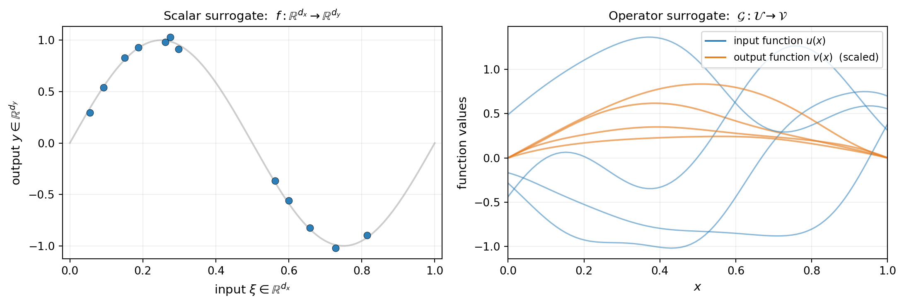
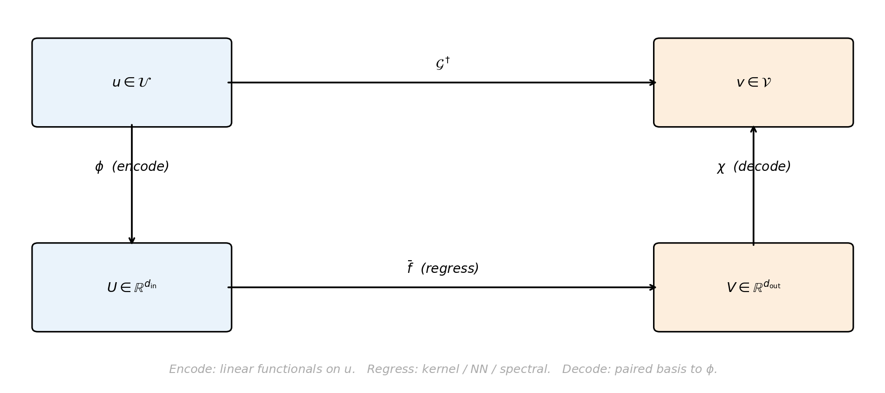
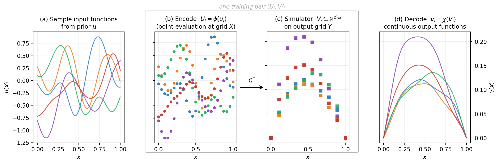
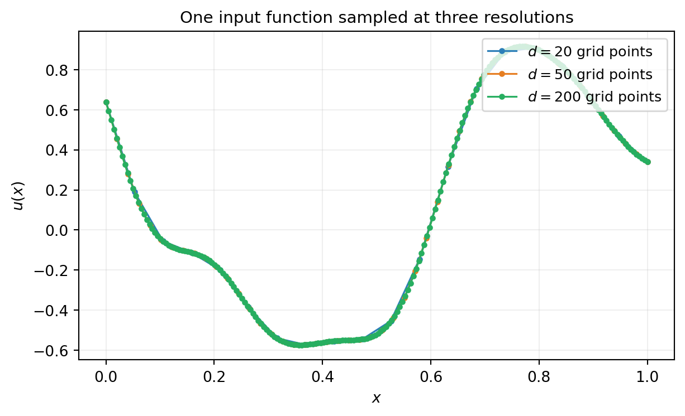

Operator Learning
PyApprox Tutorial Library
Approximating maps between function spaces from paired input-output simulation data.
Learning Objectives
After completing this tutorial, you will be able to:
- Explain what an operator is and how operator learning differs from scalar surrogate modeling
- Identify the function-valued inputs and outputs in a parametric PDE problem
- Describe the encode-regress-decode architecture shared by most operator learning methods
- Sample paired training data \((u_i, v_i)\) from a function-valued input distribution
- Decide when operator learning is the right tool relative to scalar surrogates or physics-informed methods
Prerequisites
This tutorial extends the surrogate modeling ideas from The Surrogate Modeling Workflow and Building a Gaussian Process Surrogate from scalar inputs and outputs to functions. Familiarity with Gaussian processes is helpful but not required for the concept.
From Scalars to Functions
A scalar surrogate approximates a map \(f : \mathbb{R}^{d_x} \to \mathbb{R}^{d_y}\) between Euclidean spaces. A polynomial chaos expansion or a Gaussian process learns this map from training pairs \((\mathbf{x}_i, \mathbf{y}_i)\), where each \(\mathbf{x}_i\) is a vector of \(d_x\) scalar parameters and each \(\mathbf{y}_i\) is a vector of \(d_y\) scalar outputs.
Many simulation problems naturally take functions as inputs and produce functions as outputs:
- A subsurface flow simulator takes a permeability field \(u(x)\) and produces a pressure field \(v(x)\).
- A structural code takes a Young’s modulus field \(u(x)\) and produces a displacement field \(v(x)\).
- A time-stepping code takes an initial condition function \(u(x)\) and produces the solution \(v(x, T)\) at a later time.
In all of these the input is not a fixed-dimensional vector of parameters but a function in some space \(\mathcal{U}\), and the output lives in another function space \(\mathcal{V}\). The simulator implements an operator
\[ \mathcal{G}^\dagger : \mathcal{U} \to \mathcal{V}, \qquad v = \mathcal{G}^\dagger(u). \]
Figure 1 contrasts the two settings.
A Running Example: 1D Diffusion
Throughout this tutorial we use a one-dimensional steady-state diffusion problem as a concrete operator:
\[ -\frac{d}{dx}\!\left(e^{u(x)}\, \frac{dv}{dx}\right) = 1 \qquad \text{on}\ [0, 1], \qquad v(0) = v(1) = 0. \]
Given a log-diffusion field \(u(x)\), the operator \(\mathcal{G}^\dagger : u \mapsto v\) returns the solution. The dependence is nonlinear because \(u\) enters through the exponential. This is a 1D analogue of the Darcy flow problem widely used in operator-learning benchmarks.
The Encode-Regress-Decode Architecture
Most operator-learning methods — including kernel-based ones, Deep Operator Networks (DeepONet), Fourier Neural Operators (FNO), and PCA-Net — share a common three-step architecture:
- Encode each input function \(u\) into a finite vector of codes \(U = \phi(u) \in \mathbb{R}^{d_{\mathrm{in}}}\).
- Regress the input codes to output codes \(V = \bar f(U) \in \mathbb{R}^{d_{\mathrm{out}}}\) using a parametric model.
- Decode the output codes back to a function \(v = \chi(V) \in \mathcal{V}\).
The training data \(\{(u_i, v_i)\}_{i=1}^N\) enters only through the regression step: we encode each pair, fit \(\bar f\) in finite-dimensional code space, and use the encoders and decoders at test time to lift the prediction back to function space.

The encoder \(\phi\) and decoder \(\chi\) come as a pair, tied to a finite basis: \(\phi\) produces coefficients of \(u\) in that basis, and \(\chi\) reconstructs a function from coefficients in (possibly another) basis on the output side. The regression model \(\bar f\) does the actual learning. Each method’s flavour comes from how the boxes are realised:
- Kernel methods (the focus of Kernel Operator Learning) use principal component analysis (PCA) for \(\phi, \chi\) and a Gaussian process for \(\bar f\).
- DeepONet uses a learned linear “branch” encoder and a learned “trunk” decoder, with a neural-network inner product as the regressor.
- Fourier Neural Operator (FNO) uses truncated Fourier coefficients for \(\phi, \chi\) and a parameterised spectral convolution for \(\bar f\).
Within this tutorial we keep the discussion method-agnostic.
Where the Training Data Comes From
The least obvious step for newcomers is the data itself: how do you actually build a training set \(\{(u_i, v_i)\}_{i=1}^N\)? You need a way to sample input functions from a meaningful distribution, evaluate the operator (the simulator) on each, and store both at a usable resolution.
Figure 3 walks through the four steps end to end. Panels (b) and (c) are visually grouped because together they are the unit of work that produces a single training pair \((U_i, V_i)\). The “encode” step in panel (b) uses point evaluation here — the simplest encoder. Other encoders evaluate different linear functionals on the input; we discuss the general pattern below.

The first panel is the step that differs most from scalar surrogate modelling. Instead of sampling scalar parameters \(\xi \in \mathbb{R}^{d_x}\) from a finite joint distribution, you sample functions from a probability distribution \(\mu\) over the function space \(\mathcal{U}\). The most common choices for \(\mu\) are:
- A Gaussian random field with a chosen mean and covariance kernel. The covariance kernel’s length scale controls how oscillatory typical samples are. See Karhunen-Loève Expansions for the standard construction.
- A log-Gaussian field (the exponential of a Gaussian random field). Useful when the physical input must be positive, like a diffusion coefficient.
- A parameterised function class with finitely many random coefficients (e.g. random Fourier series, random sums of bump functions). This is the simplest case and collapses to standard scalar surrogate modelling in the limit.
Encoders Are Collections of Linear Functionals
An encoder \(\phi\) is a collection of \(d_{\mathrm{in}}\) linear functionals \(\{\ell_j\}_{j=1}^{d_{\mathrm{in}}}\), and the code is the vector
\[ U_i = \bigl(\langle u_i, \ell_1\rangle,\ \langle u_i, \ell_2\rangle,\ \ldots,\ \langle u_i, \ell_{d_{\mathrm{in}}}\rangle\bigr). \]
Different encoders use different functionals:
- Point evaluation uses Dirac functionals \(\ell_j = \delta_{x_j}\), giving \(U_i^{(j)} = u_i(x_j)\). The implicit basis is the nodal basis of cardinal functions through the grid points \(x_j\).
- Spectral / Galerkin encoders use smooth basis functions \(\ell_j = \psi_j\) (Fourier modes, Legendre polynomials, finite-element hat functions, etc.) and compute the projection by quadrature: \(\langle u_i, \psi_j\rangle \approx \sum_q w_q\, u_i(x_q)\, \psi_j(x_q)\). Here the evaluation points \(x_q\) are quadrature nodes determined by the encoder’s basis, not by the simulator.
- PCA encoders use data-driven eigenfunctions of the training covariance. The functionals \(\ell_j\) are discovered from the data rather than chosen in advance.
Notice that all three boil down to “evaluate \(u_i\) at some points, then take a linear combination”. Point evaluation is the degenerate case where each \(\ell_j\) is a Dirac and the linear combination has a single nonzero coefficient. The simulator’s interface is always a vector \(U \in \mathbb{R}^{d_{\mathrm{in}}}\); only the meaning of its entries changes between encoders. The kernel operator surrogate in the next tutorial uses a PCA encoder.
The boxed pair of panels (b)-(c) is the expensive step of the pipeline: each call inside the box is one simulator evaluation, the cost \(\mathcal{G}^\dagger\) that the surrogate is supposed to amortise. A few hundred to a few thousand paired evaluations is typical.
Grids Are Discretisations, Not the Object
A subtle but important point: the input function \(u\) is the underlying object, and the grid is just one way to encode it. The same function can be encoded at multiple resolutions. A good operator-learning method should be mesh-aware: the kernel, regression, or network parameters should describe the function, not the specific grid.

In practice you must pick one resolution for training. As long as that resolution is fine enough to resolve the function class you sampled from (small enough grid spacing relative to the prior’s correlation length), the discretisation error is negligible and the learned operator transfers between nearby resolutions. We return to this point in Kernel Operator Learning.
When Operator Learning Is the Right Tool
Operator learning is the right tool when:
- The simulator is expensive and you need many evaluations (uncertainty quantification, optimisation under uncertainty, Bayesian inversion).
- The input is naturally a function (a coefficient field, an initial condition, a boundary condition).
- You can afford to run the simulator a few hundred to a few thousand times to build training data.
It is not the right tool when:
- The input is genuinely scalar (a handful of numbers): use a polynomial chaos expansion, function train, or scalar Gaussian process, all of which are simpler.
- You have a single simulation and want to know the answer once: use the simulator directly. Operator learning is about the multi-query regime where the training cost is amortised.
- You need to enforce a known equation: methods like physics-informed neural networks impose the PDE as part of the loss, which is a different design goal. Operator learning treats the simulator as a black box.
Summary
An operator surrogate approximates a map \(\mathcal{G}^\dagger : \mathcal{U} \to \mathcal{V}\) between function spaces from paired examples \(\{(u_i, v_i)\}_{i=1}^N\). Most methods follow an encode-regress-decode architecture: compress each input function into a finite vector of codes, regress the input codes to output codes in finite-dimensional Euclidean space, then decode back to a function. Training data is built by sampling input functions from a chosen prior (typically a Gaussian random field) and running the simulator on each sample. Grids are discretisations of the underlying functions; a good surrogate transfers across resolutions.
Two practical takeaways for the next tutorials:
- Sampling input functions requires a probability distribution over \(\mathcal{U}\), not just a joint distribution on a few scalars. Gaussian random fields and KLE expansions are the workhorses.
- The encoder is a modelling choice: a collection of \(d_{\mathrm{in}}\) linear functionals on \(\mathcal{U}\) that produce a finite code vector. Point evaluation, spectral/Galerkin projection, FE-nodal projection, and PCA are all instances of the same pattern; they differ in which functionals they use and where the underlying evaluation points come from. Different operator-learning methods (kernel, FNO, DeepONet) primarily differ in how the encoder-decoder pair \((\phi, \chi)\) and the regressor \(\bar f\) are realised. The regression step in the middle is shared.
The next tutorial, Kernel Operator Learning, realises the encode-regress-decode pipeline concretely with PCA encoders and a Gaussian process regressor, and shows the end-to-end workflow on the 1D diffusion operator introduced above.
References
- Batlle, P., Darcy, M., Hosseini, B., & Owhadi, H. (2023). Kernel methods are competitive for operator learning. Journal of Computational Physics. The kernel-based operator-learning framework realised in PyApprox.
- Lu, L., Jin, P., Pang, G., Zhang, Z., & Karniadakis, G. E. (2021). Learning nonlinear operators via DeepONet based on the universal approximation theorem of operators. Nature Machine Intelligence.
- Li, Z., Kovachki, N., Azizzadenesheli, K., et al. (2020). Fourier neural operator for parametric partial differential equations. arXiv:2010.08895.
- Bhattacharya, K., Hosseini, B., Kovachki, N. B., & Stuart, A. M. (2021). Model reduction and neural networks for parametric PDEs. The SMAI Journal of computational mathematics. PCA-Net and the general framing of operator learning between Banach spaces.